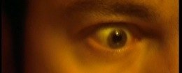

Studio Warszawa Centralna
POMYSŁY TO NASZA SPECJALNOŚĆ
Wybrane filmy produkowane/koprodukowane/postprodukowane przez Studio Warszawa Centralna
Selected productions/coproductions/postproductions by Studio Warszawa Centralna
DOKUMENT – DŁUGI METRAŻ
„Sympozjum Realności“, 2006, 22‘
reż. Rafał Leszczyński
zdjęcia: Jan Przyłuski, Rafał Leszczyński
dźwięk: Jarosław Bajdowski
udział wzięli: Zbigniew Warpechowski, Adina Bar-On, i Oskar Dawicki, Ewa Zarzycka i in.,
produkcja: Studio Warszawa Centralna, Bałtycka Galeria Sztuki Współczesnej
opis: czwórka wybitnych artystów performance, Adina Bar-On, Zbigniew Warpechowski, Ewa Zarzycka, Oskar Dawicki, prezentują swoje akcje i opowiadają o
„The Differences“ [polski tytuł: „Różnice“], 2006, 50‘, 52 min.
reż. Jan Przyłuski
zdjęcia: Jan Przyłuski
operatorzy kamer: Jan Przyłuski, Rafał Leszczyński
montaż: Jan Przyłuski
muzyka: Antoni Łazarkiewicz
produkcja: Studio Warszawa Centralna
koprodukcja: Mazowieckie Centrum Kultury i Sztuki
Udział wzieli: Jan Świdziński, Bartosz Łukasiewicz, Zbigniew Warpechowski, Waldemar Tatarczuk, Nicola Frangione i in.
opis: film dokumentalny wokół pierwszego festiwalu sztuki kontekstualnej “W kontekście sztuki/RÓŻNICE”
„Making of ... The Limousine“, 2008, 22‘
real. Mateusz Skalski, Jan Przyłuski
zdjęcia: Mateusz Skalski
operatorzy kamer: Mateusz Skalski, Mateusz Wołoczko
montaż: Jan Przyłuski
producent wykonawczy: Mateusz Skalski
produkcja: Studio Warszawa Centralna dla Ozumi Films
opis: Making of z filmu Jerome’a Dassier z Christopherem Lambertem i Agnieszką Grochowska w rolach głównych.
DOKUMENT – KRÓTKI METRAŻ
„Szklana pułapka“, 2007,18‘
reż. Paweł Ferdek
zdjęcia: Wojciech Staroń
montaż: Jan Przyłuski
muzyka: Mikołaj Trzaska
kierownik produkcji: Kuba Kosma
dźwięk: Kamil Radziszewski
produkcja: Kosma Films, Stowarzyszenie Filmowców Polskich, TVP Kultura
postprodukcja: Studio Warszawa Centralna
Festiwale (m.in): EFA (nominacja), IEE Amsterdam.
FABUŁA – KRÓTKI METRAŻ
„Arcymistrz“, 2003, 5‘
reż. Daniel Bauman
scenariusz: Daniel Bauman
zdjęcia: Karol Czyż
montaż: Jan Przyłuski
muzyka: Meritum, John Cage
współpraca reżyserska: Jan Przyłuski
współpraca operatorska: Dominik Rudnicki
Udział wzieli: Jacek Odrowąż-Pieniążek (jako FISHERLE), Zbigniew Maciak (jako CAPABLANKA), Kasia Drewniana (jako DREWNIANA KASIA), Dominik Rudnicki, Kuba Radomski, Wiktor Gutt
„Adama Kamissoko“, 2005, 5‘
reż. Jan Przyłuski
zdjęcia: Łukasz Gutt, Karol Czyż
montaż: Jan Przyłuski
produkcja: Studio Warszawa Centralna
opis: spotkanie z malijskim muzykiem na dachu jednego z domów na warszawskiej Ochocie
„Fu“, 5‘
reż. Jan Przyłuski
zdjęcia: Jan Przyłuski
produkcja: Studio Warszawa Centralna
„Biegacz“ 5‘
reż. Karol Czyż, (postreżyseria z found footage - Jan Przyłuski)
zdjęcia: Karol Czyż
montaż: Jan Przyłuski
produkcja: WRiTV Katowice, Studio Warszawa Centralna
wystąpił: Kamil Krajewski
as well as:
“INA”, dir. Karolina Ekiert, 18’, documentary, a story of Malayan woman, her love and friendship.
“Child’s Wilderness”, 22’, for visual artist Wiktor Gutt, shown at exhibition Królikarnia, National Gallery.
“Droga do...” (Way to...), 18’ - music documentary for Too Funky Records
for SP Records – music video „Sliding“ Kpt. Da, dir. Slawek Pietrzak
for Polskie Wydawnictwa Audiowizualne (Polish Audiovisual Publishers) – project of documentary series on art naive
for ITI Neovision – on-air promotion of channels War and Peace (Russian film channel) and MGM, film trailers (see demodvd)
for IDG (International Data Group) – visuals and production of a show in National Theater Warsaw
for Wiktor Gutt – „Diavoli“ – video instalation, presented: Academy of Fine Arts, Warsaw
for Nolys & EMO (European Music Office) – „Diversidad“, documentary film, dir. Lude Reno, Vienna 2008
“Adama Kamissoko. Mali griot’s music“ – music video
“Eros and Thanatos”, butoh dance performance of Japanese master Daisuke Yoshimoto, Studio Theater, Warsaw
„One Love“ – music video from Global Village action
„Haut Couture“ – for Mario Menezi fashion house, TV commercial ad,
„Black Dot“ – short film about art of Bartosz Łukasiewicz
... and more :)



Arcymistrz, reż. Daniel Bauman
Biegacz, reż. Karol Czyż (found footage by Jan Przyłuski)
Making of... The Limousine, reż. Mateusz Skalski, Jan Przyłuski
Szklana pułapka, reż. Paweł Ferdek, prod. Kosma Films/SFP (Polish Filmakers Association)
Copyright by Jan Przyluski 2008
Fe, reż. Jan Przyłuski